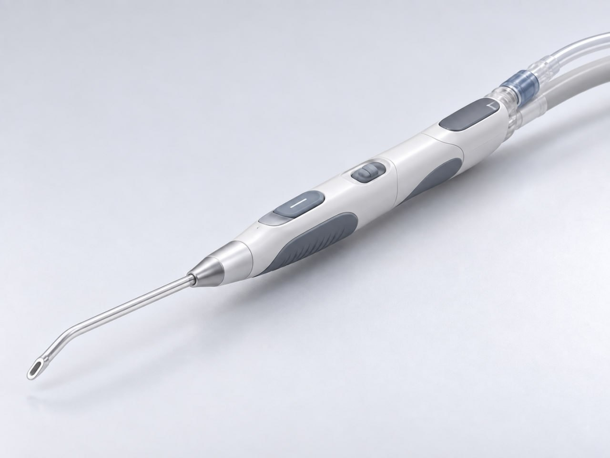

Doppler-enabled suction
Combining vascular sensing and surgical suction for neurosurgical workflows.
We’re developing Argys Tiburon to combine Doppler sensing and surgical aspiration in an instrument surgeons already reach for.
Our initial focus is neurosurgery: helping surgeons identify nearby blood flow during tumor removal, within their existing workflow.

ARGYS CONCEPT RENDER / IN DEVELOPMENTArgys Tiburon combines Doppler sensing with surgical aspiration in one development concept. The aim is to make information about nearby blood flow available as the surgeon works.
Sensing performance, interpretation and clinical utility remain development and validation questions.
A compact, hand-operated instrument is central to our approach. We are working toward useful information within a familiar workflow, with ergonomics and usability considered alongside sensing.
The render illustrates a design concept. Final form, features and intended use may change during development.
An intelligent instrument has to earn its place in the operating room.
We’re moving from concept toward bench validation, with realistic test conditions and clinician feedback guiding development.
Evaluate sensing during suction, irrigation, bleeding and instrument interference, including conditions relevant to future tissue fragmentation.
Explore whether the information can support surgeon decisions and fit alongside existing Doppler and visualization workflows.
Develop bench and tissue-model testing that reflects the motion, fluids and constraints of the surgical environment.
Refine the first intended use, product requirements and regulatory strategy as evidence develops.
Our long-term vision brings sensing, visualization and AI-enabled capabilities into intelligent surgical instruments.
Combining vascular sensing and surgical suction for neurosurgical workflows.
Exploring how sensing can integrate with tools used for tissue removal.
Investigating ways to make complex interventions simpler and more intuitive.
These are research and development directions. Argys has not established clinical performance or announced a commercially available device.
Published work on intraoperative Doppler helps frame the clinical questions behind our development.
A 2025 study explores the use of microvascular Doppler during complex skull base tumor surgery. It provides context for why vascular information matters during surgical decision making.
This research concerns independent systems and investigators. It does not evaluate or validate an Argys device, and its authors do not endorse Argys.
Our technology is in development. We are focused on concept refinement, prototyping and bench validation. We have not announced a device for commercial or clinical use.
Our starting point is Doppler-enabled surgical suction for neurosurgery, with particular interest in vascular awareness during tumor removal. The first intended use will be refined through development, testing and regulatory planning.
AI-enabled sensing, visualization and device capabilities are part of our broader vision. The immediate engineering priority is obtaining a reliable, useful signal in realistic conditions. We do not claim validated AI performance.
We welcome conversations about clinical workflow, test models, engineering and strategic collaboration. Connect with the team